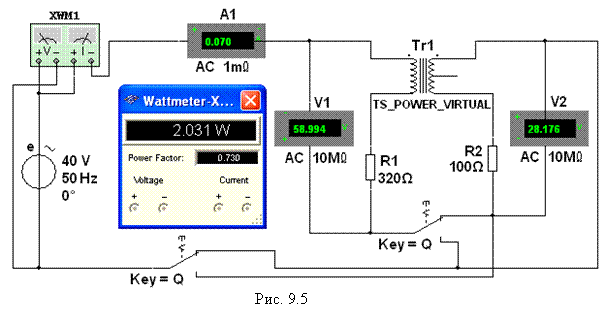

Задание 2. Открыть файл 9.5.ms10, размещённый в папке Circuit Design Suitе 10.0, или собрать на рабочем поле среды МS10 схему (рис. 9.5) для ииследования реального воздушного
трансформатора с последовательно
соединёнными обмотками.
В схеме цепи:
- установить
значение ЭДС Е = Еm/, вычисленное в Задании 1;
- задать
сопротивления резисторов R1
» 0,2ХL1, Ом и R2 » 0,2ХL2, Ом, где ХL1 и ХL2 -
рассчитанные
значения индуктивных сопротивлений обмоток трансформатора (см. табл. 9.1);
- скопировать схему на
страницу отчёта;
- установить
ключи Q и S вначале в нижние положения (согласное включение обмоток
трансформатора), а затем в верхние (встречное их включение);
- включить
программу моделирования и занести показания
приборов в табл. 9.2. Угол сдвига фаз j между напряжением и током на входе цепи найти по формуле  , где Power Factor = cosj – коэффициент мощности цепи (см. интерфейс ваттметра XWM1);
, где Power Factor = cosj – коэффициент мощности цепи (см. интерфейс ваттметра XWM1);
- рассчитать
углы сдвига фаз j1 = arctg(XL1/R1) и j2 = arctg(XL2/R2) обмоток трансформатора и их взаимную индуктивность M. При вычислении взаимной индуктивности М
использовать соотношения
(9.2) и (9.3);
- сравнить
вычисленное значение взаимной индуктивности М со значением М,
найденным в Задании 1 (см. табл. 9.1);
- по данным измерений и расчетов построить векторные диаграммы
напряжений и тока схемы рис. 9.2, в при согласном и при встречном соединениях
обмоток трансформатора, воспользовавшись соотношениями (9.1) при I1 = I2, U = U1+ U2.
Т а б л и ц
а 9.2
|
Включение обмоток |
Измерено |
Рассчитано |
||||||
|
I,
мА |
U, В |
U1, В |
U2, В |
j, град |
j1, град |
j2, град |
М, Гн |
|
|
Согласное |
|
|
|
|
|
|
|
|
|
Встречное |
|
|
|
|
|
|
|
|